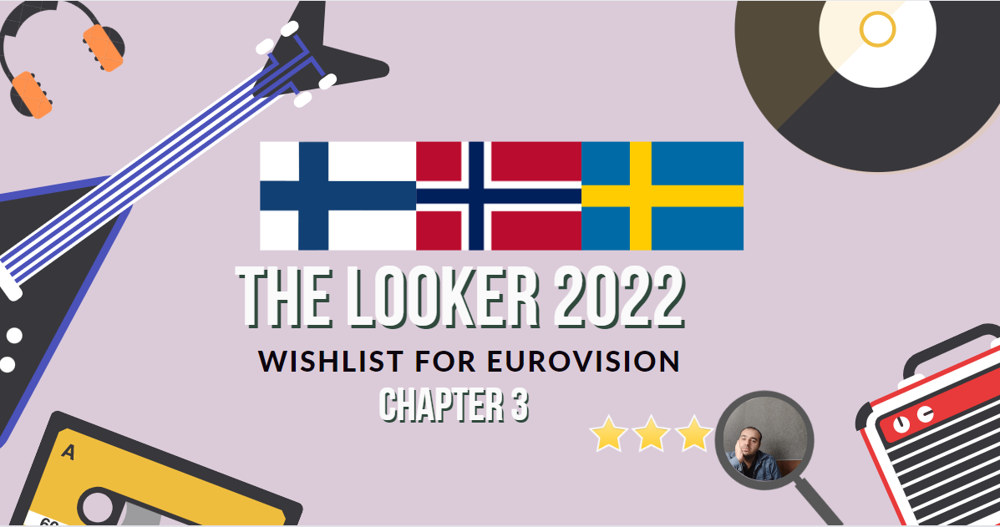
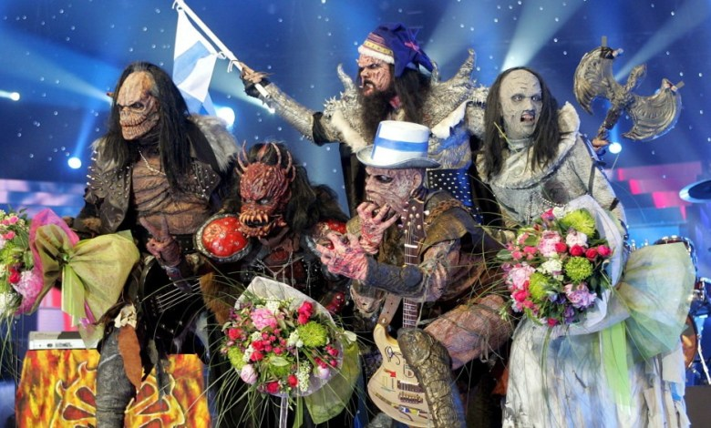

In this article, we have prepared the Eurovision songs of the Scandinavian countries for you.
Sweden has participated in the Eurovision Song Contest 61 times since making its debut in 1958, missing only three contests since then (1964, 1970 and 1976). Since 1959, the Swedish entry has been chosen through an annual televised competition, known since 1967 as Melodifestivalen. At the 1997 contest, Sweden was one of the first five countries to adopt televoting. Sweden hosted the contest six times: three times in Stockholm (1975, 2000, 2016), twice in Malmö (1992, 2013) and once in Gothenburg (1985).
Sweden is one of the most successful competing participants at the Eurovision Song Contest, with a total of six victories, second only to Ireland's seven wins. Sweden also has the most top five results of the 21st century, with 12; in total, Sweden has achieved 26 top five results in the contest. After finishing second with Lill Lindfors and Svante Thuresson in 1966, Sweden went on to achieve its six victories with ABBA (1974), Herreys (1984), Carola (1991), Charlotte Nilsson (1999), Loreen (2012) and Måns Zelmerlöw (2015).
Heroes is a song by Swedish singer Måns Zelmerlöw. It was released on 28 February 2015 as a digital download in Sweden. The song was written and composed by Anton Malmberg Hård af Segerstad, Joy Deb and Linnea Deb. On 14 March, the song won Melodifestivalen 2015 and represented Sweden in the Eurovision Song Contest 2015 in Vienna, Austria, which it won. It is the lead single for Zelmerlöw's sixth studio album Perfectly Damaged.
Norway participated in the Eurovision Song Contest 2009 with the song "Fairytale" written and performed by Alexander Rybak. NRK organised the national final Melodi Grand Prix 2009 in order to select the Norwegian entry for the 2009 contest in Moscow, Russia. "Fairytale" performed by Alexander Rybak was selected as the winner with the clearest victory in Melodi Grand Prix to date following a five-week-long competition consisting of three semi-finals, a Last Chance round and the final.
Norway was drawn to compete in the second semi-final of the Eurovision Song Contest which took place on 14 May 2009. Performing during the show in position 6, "Fairytale" was announced among the top 10 entries of the second semi-final and therefore qualified to compete in the final on 16 May. It was later revealed that Norway placed first out of the 19 participating countries in the semi-final with 201 points. In the final, Norway performed in position 20 and placed first out of the 25 participating countries, winning the contest with 387 points. This was Norway's third win in the Eurovision Song Contest since 1995.
Fairytale is a song written and composed by Belarusian-Norwegian violinist and singer Alexander Rybak, the first single from his debut album Fairytales. The song was the winner for Norway of the Eurovision Song Contest 2009, held in Moscow, Russia. In 2022, The Independent named it 35th best Eurovision-winning song of all time.
Finland was represented by Lordi in the Eurovision Song Contest 2006 with the song "Hard Rock Hallelujah". The song, written and composed by band member Mr. Lordi, went on to win the Eurovision Song Contest in 2006, placing first in both the semifinal and final. This gave Finland its first ever win in the competition.
Hard Rock Hallelujah is a song by Finnish hard rock band Lordi. It was released as a single in 2006, reaching the No. 1 spot in Finland and reaching the top 10 in eight other European countries. In the United Kingdom, the song peaked at No. 25. Lordi performed the song for Finland at the 2006 Eurovision Song Contest and won the contest with 292 points, marking the country's first win. It was voted as the most popular Finnish Eurovision entry in the 40 years the country had participated. It held the record for most points until it was beaten by "Fairytale" by Alexander Rybak of Norway with 387 points three years later. On 26 May 2006, Lordi broke a world record for karaoke songs, when about 80,000 people sang "Hard Rock Hallelujah" on Helsinki's Market Square.